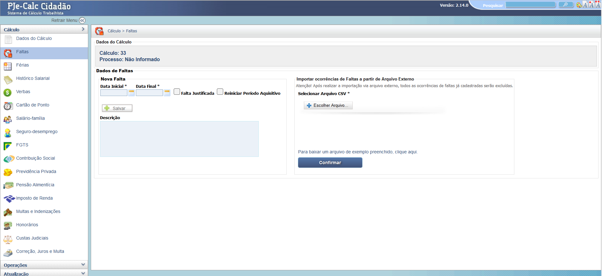
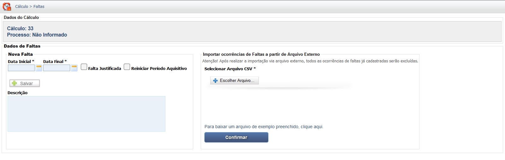

Manual Interativo de Cálculos Trabalhistas
Um guia completo e interativo para entender os cálculos na esfera judicial trabalhista.
Lançamento das Faltas
A tela "Faltas" permite o registro manual de ausências ou a importação de um arquivo CSV externo. É possível indicar a data inicial e final da falta, se ela foi justificada e se deve reiniciar o Período Aquisitivo de Férias.

